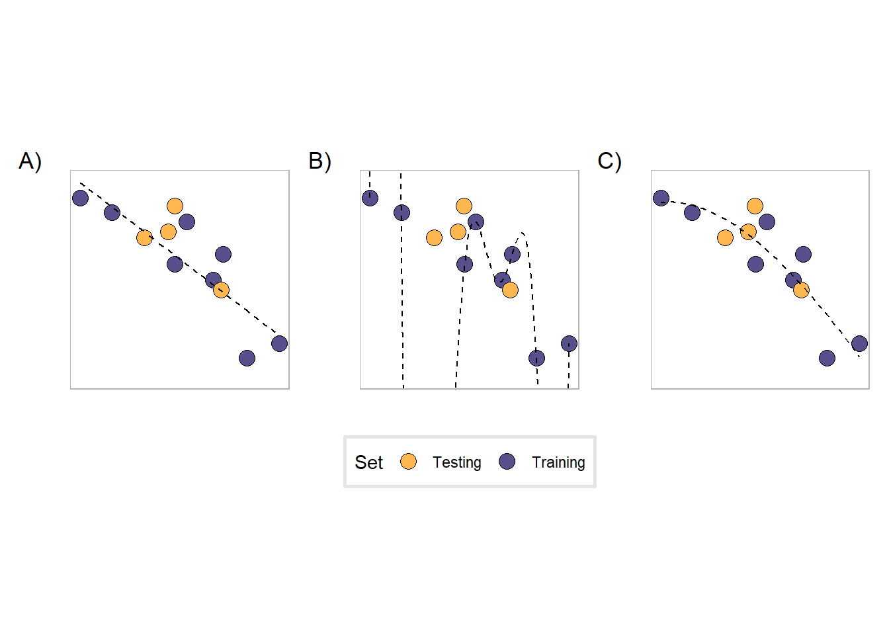

Introduction
I wrote this up because I wanted a pretty straightforward primer on the bias-variance trade off that was reasonably accessible to point people towards1. There’s a sea of excellent material on the topic, but I’ve found that viewing the subject from a handful of different perspectives is what really gets me past the initial bump when learning a new topic. To that end, this page is intended to be a pretty high-level intro to the bias-variance tradeoff for people who are relatively new to machine learning. It’s not the be-all end-all discussion of the topic, but it is (I think) a decent exposure to the topic.
The purpose of this page is to:
- Introduce you to bias, variance, and some other concepts you’ll hear when learning about them with some concrete examples
- Give you a hands-on example to play around with
While this article is intended for beginners, there are some light requirements to get the most out of it:
- You’ve trained a model before and have used it to make predictions.
- You know what a training and testing set are.
- You know how to evaluate a model’s performance using some metric (like accuracy, for example).
A typical machine learning workflow
In a typical prediction project, you are given a dataset and tasked with creating a model that can predict some label or output y from the set of features X. A (vastly) simplified2 workflow might look like:
flowchart TB
RawData[Raw Data]
EDA[Exploratory Data Analysis]
ModelTraining[Model training]
ModelEvaluation[Model Evaluation]
DeployModel[Use model]
Question[Was model performance satisfactory?]
RawData --> EDA --> ModelTraining --> ModelEvaluation
ModelEvaluation --> Question
Question-- No - repeat to\nimprove performance -->EDA
Question-- Yes --> DeployModel
During the model training step, the model tunes its parameters to optimize performance on the training set. Afterwards, we evaluate the model’s ability to perform on new data by using it to make predictions on the testing set. It is during these steps that we are considering bias and variance.
Bias, variance, under- and overfitting
Bias and variance are used to describe a model’s performance on training and testing sets. Put simply, bias describes the error in the model on the training set, while variance describes the error in the model when exposed to the testing set.
The concepts of model underfitting or overfitting to training data are different lenses through which we can understand bias and variance. There are many ways to think about underfitting and overfitting.
- In terms of model performance, underfitting occurs when a model doesn’t perform well on the training set, and overfitting occurs when the model performs very well on the training set but poorly on the testing set.
- More abstractly, underfitting is what happens when a model is too simple to explain the nature of the data, while overfitting is when the model doesn’t separate the “signal” in the data from “noise” and incorrectly focuses on that noise as important3.
- In terms of bias and variance, models that underfit the data have high bias and low variance, while models that overfit have low bias and high variance.
Figure 2 shows examples of these situations.

In the figure, the black dashed line is trained on the purple dots, while the yellow dots indicate points held out for testing. The black dashed line is a polynomial equation of degree \(n\). Since the data obviously has some non-linear component to it, we test polynomials of different degrees to find a good fit to the data.
- Plot A is an example of a model that underfits the data. This is a polynomial of degree 1, a line, and is not complex enough to capture the behavior of the data. We say that it has relatively high bias because its predictions on the training set aren’t very good, but has relatively low variance because its predictions won’t get much worse than what they are on the training set.
- Plot B, on the other hand, is overfitting the data with an overly complex model. This is a polynomial of degree 9, which enables it to accurately predict all of the training points. However, its predictions for the testing set are generally bad. This model has low bias because of how well it performs in training, but extremely high variance due to how badly it performs on new data4.
- Plot C is a good middle ground between the two previous cases. It does have some bias as it does not perform amazingly well at prediction on the training set, but it is able to more adequately capture the relationship in the data without “memorizing” its shape (lower variance).
Studying for a math test
Here’s an example that helped me understand this stuff. Pretend that you have a math exam next week and you’re trying to figure out how to prepare for it. Your friend was able to get all of the previous year’s exams for the same class and has shared it with you. Here are three possible scenarios:
- You don’t look at the practice tests, you don’t study, and you don’t do practice problems. You show up to the exam and completely bomb because of course you do.
- All you do is study the practice tests. You do the problems over and over until you can get them 100% correct without trying. On the day of the exam, the questions are completely different because of course they are and you fail.
- You take a look at the practice tests to get a general idea of what kind of questions the professor asks on the exam for this material. You study that material in the book and look over recent homework questions covering those topics. The exam is still hard and the questions are different, but you’re prepared to handle new questions because you’re a good little student.
Now that we are equipped with these new terms, we see that scenario one describes the scenario where you underfit the material while you overfit the material in the second scenario. In the third scenario, rather than learn the material, you learn it well enough to adapt to new questions5.
The bias-variance tradeoff
In a perfect world, we would have a model with low bias that performs amazingly on the training set, but also has low variance and is able to generalize to any new data we throw at it. Unfortunately, that is simply not the case, and all models fall on somewhere on this spectrum:
flowchart LR
A[Low bias\nHigh variance]
B[High bias\nLow variance]
A <--> B
Models with low bias and high variance (ie, overfit the data) are on one end and models with high bias and low variance (underfit) are on the other end. The main task in the model training process is to find the model that has an acceptable level of bias and variance for your task.
However, it is impossible to completely eliminate both bias and variance. To understand why this is true, let’s begin with a model that has high bias and low variance. The model has high bias and low variance because it is too simple to explain the data. This may be because we are not using all of the variables avaiable to use, or maybe because the model itself isn’t complex enough. In either case, we introduce more complexity to the model and it begins to fit better to the training set. However, at the same time that its bias is decreasing, its variance is naturally increasing because the newly acquired model complexity is causing it to fit more strongly to the training data, making it (generally) perform a bit worse on new data.
On the other hand, a complicated model with low bias but high variance can improve by simplifying itself. For example, in the plots above, decreasing the degree of the polynomial decreases the complexity of the model. Relaxing that complexity and decreasing the variance, though, comes at the cast of increased prediction errors on the training set.
This tension between bias and variance, known as the bias-variance tradeoff is a central conflict in machine learning, and much of the machine learning process is spent tackling this issue. Two of the ways the bias-variance tradeoff is addressed is through cross validation and evening out https://developers.google.com/machine-learning/data-prep/construct/sampling-splitting/imbalanced-data,
A hands-on example
I put together this small Shiny app so you can see these concepts at work. The elements of the app are:
- Some semi-random data points6 separated into a training (blue points) and testing set (red points). The default split of the data is 70% training and 30% testing points (a common training-test split). You are able to vary the proportion of points that belong to the training set by dragging the “Training set proportion” slider.
- The blue line is a polynomial fit to the training data. You can vary the degree of the polynomial by dragging the slider - higher degree polynomials increase the complexity of the model, allowing it to better fit to the training data.
- Below the graph are the root-mean-square errors (RMSE) for the polynomial against the training set and the testing set - the better the model performs, the lower the RMSE will be.
- The difference between the training and testing RMSE is also indicated: a negative difference indicates that the training RMSE was lower than the testing RMSE.
Some things to think about
Here are some things to consider as you vary the model complexity and training set proportion of the data:
- Keep track of how the RMSE changes with the degree - for which degrees does the model perform best? How are you making this decision?
- If you had to choose a degree polynomial as the “best fit,” which one would you choose? Why?
- The training RMSE of the degree 9 polynomial is 329.96, while it is 319.32 for degree 10. If you had to pick between these two models, which one would you pick? Why?
- The degree of the polynomial is a hyperparameter, How are hyperparameters different than parameters?
- The process of picking the degree that performs best is called hyperparameter tuning (or optimization). We’re using the app to do this manually, but how would you do this process in a real machine learning project?
- Keeping the degree the same, begin varying the training set proportion. How does this effect the various RMSE metrics? How can you explain this in terms of bias and variance?
Next steps
Here are some links
Footnotes
The original audience for this was the students in ABE 516x, the ABE department at ISU’s introduction to data science research methods. Also, I’m procrastinating on writing my dissertation.↩︎
I say simplified because a) pretty much every box in this diagram is its own topic that requires consideration b) there is lot more back-and-forth between steps in practice. UCI Machine Learning Repository or the Tidy Tuesday project)↩︎
You can conceptualize the distribution of some data set containing
xandypoints by some function \(y = f(x) + \varepsilon(x)\), where \(f(x)\) is the “true” relationship between \(x\) and \(y\) and \(\varepsilon\) is some error term. Machine learning in general tries to learn some \(\hat{f}\) to approximate \(f\).↩︎Another aspect to consider is the deliverable of a machine learning project. Typically this is to produce some model so that future data can be used in prediction, but another common expectation from a model is some sort of insight into what the relationship between the inputs and outputs are. While linear models are simple and often don’t capture the entirety of the relationship in a dataset, it does well enough, and more importantly, is explainable - given some inputs, you can see exactly how the model comes to its decisions. When using more complicated models, gains in model performance often come at the cost of human interpretability, usually to the point where we can’t explain how a model decides what it does (the so-called black box problem).↩︎
Like most examples that try to explain abstract, mathematical concepts, this one falls apart pretty quickly when you start asking questions (“Math exams are data sets? I’m the model?”), but just go with it.↩︎
I randomly generated some points
xviarunif(75, 1, 20), then mapped them tof(x) = x^2 / 20 + runif(1, 0, 25)↩︎